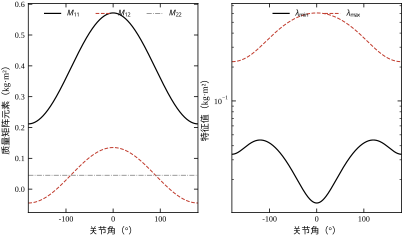
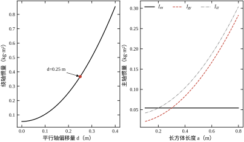
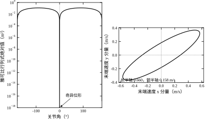
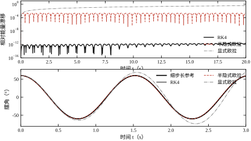
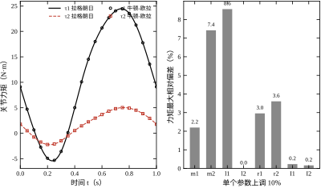

位置环带宽做到几百赫兹以后，一台二连杆机构的关节之间就不再是“各转各的”。第二关节加速时，第一关节会感到一个反向力矩；第一关节转动时，第二关节的惯量会跟着改变。这些耦合不在传递函数里，也不在 PID 的三个参数里，只存在于动力学方程中。
耦合的强弱可以用质量矩阵的非对角元衡量。本章二连杆在 q_2=60^\circ 时 M_{12}=0.0900，相当于 M_{11} 的 18.7%；q_2 增大到 120^\circ 附近，M_{12} 过零；再增大到 180^\circ，它变成 -0.045。非对角元过零意味着第二关节对第一关节的耦合在这一位形“消失”，符号翻转则意味着耦合方向反转。如果控制器把 M_{12} 当成固定的正数，它在折叠位形附近给出的前馈力矩方向就是错的。
有人认为动力学是机械专业的事，控制只需要一个传递函数。这个看法在单轴、低速、轻载时成立，在下面三类场合会立刻失效。第一类是高速高加速：电机选型要看峰值力矩，峰值力矩由惯量和角加速度决定，凭经验拍一个安全系数往往不是选大就是选小。第二类是需要前馈：轨迹跟踪的误差主要来自模型可知的那部分力矩，把这部分提前算出来加进去，反馈只需处理剩余误差。第三类是仿真与观测：没有模型就无法在电脑上复现故障，也无法用模型估计外力。
本章的任务是把“机构”翻译成“方程”。翻译的工具是分析力学，产物是形如 M(q)\ddot q+C(q,\dot q)\dot q+g(q)=\tau 的方程。这个方程在后续章节会以不同面貌反复出现：第 55 章的 LQR 需要它的线性化，第 58 章的 MPC 需要它做预测，第 97 章的轨迹规划需要它校核可行性，第 99 章的机械臂控制需要它做计算力矩。
拿到一个机构，工程上会问三个不同的问题，它们的输入输出正好错开，见表 10-1。
| 问题 | 已知 | 求解 | 典型用途 |
|---|---|---|---|
| 正动力学 | 关节力矩 \tau、初始状态 | 关节运动 q(t) | 仿真、虚拟调试 |
| 逆动力学 | 运动 q,\dot q,\ddot q | 所需力矩 \tau | 前馈、电机选型、力矩校核 |
| 参数辨识 | 运动与实测力矩 | 惯性参数 \theta | 建模、负载估计 |
表 10-1 三类动力学问题的输入输出
正动力学是仿真的核心。给定控制器输出的力矩，积分出下一时刻的位置与速度，这是数字孪生与硬件在环测试的基础。逆动力学是控制的核心。轨迹规划给出 q_d,\dot q_d,\ddot q_d，逆动力学算出前馈力矩，控制器再叠加反馈。参数辨识是建模的核心。真实机构的质心位置、惯量往往拿不到图纸值，需要用实测数据反推。
三者共用同一组方程，只是求解方向不同。正动力学要解线性方程组 M\ddot q=\tau-C\dot q-g，逆动力学只是一次矩阵乘法，参数辨识则要把方程整理成对参数的线性形式。理解了这一点，就不会把三者当成三套理论。
牛顿-欧拉法逐杆写力平衡，物理图像清楚，但有两个麻烦。第一，约束力（铰链反力）是未知量，两根杆就多出四个未知反力，方程数与未知数一起膨胀，稍不留神就漏项。第二，矢量方向依赖坐标系，画错一个箭头，符号就反了，而结果往往仍然“看起来合理”。
分析力学换了一个起点。它不问“每个杆受什么力”，而问“整个系统的动能与势能是多少”。约束力在理想约束下不做虚功，自动从方程中消失；能量是标量，没有方向，也就没有箭头画错的问题。代价是推导过程中要对时间求导、对广义坐标求偏导，代数运算量比逐杆平衡大，但这一步可以交给符号计算，且结果有统一形式。
两个方法不是对立的。拉格朗日方程给出结构，让人看清哪一项是惯性、哪一项是科氏力、哪一项是重力；牛顿-欧拉递推给出算法，适合编程，计算量随自由度线性增长。工程上的成熟做法是：用拉格朗日法推导小系统、建立直觉，用牛顿-欧拉法实现大系统、保证实时性，两者用同一组数据互相校验。
还有第三个好处，容易被忽略但影响深远：拉格朗日方程的结果可以分层解释。式 (10-12) 的三项分别对应三种物理效应，调参时能判断“这个位形下误差主要来自重力还是来自科氏力”。若只拿一个黑箱的动力学库直接算力矩，出了问题只能猜。分层解释的能力，来自把方程写成“惯性 + 科氏 + 重力”的固定结构，而不是来自某一次数值结果。
这个结构还便于扩展。给二连杆加一个末端负载，只需修改第二杆的质量、质心与惯量，方程形式不变；把平面机构改成三维，只需把标量转动换成旋转矩阵，递推结构不变。结构稳定的理论，才能在工程中反复使用。
在动手推公式之前，有五个问题必须先有答案，否则推出来的方程没法用。
第一，自由度是多少，广义坐标怎么选。自由度是独立坐标的个数，不是关节数。一个四连杆闭链有三个关节，自由度却只有一；选错广义坐标，方程里会多出约束方程，后续处理麻烦。
第二，约束是完整的还是非完整的。完整约束能写成坐标之间的代数关系，可以直接消元；非完整约束只能写成速度之间的关系，比如轮式小车的“不能侧滑”，消不掉，必须用乘子处理。
第三，惯性参数从哪里来。质量、质心位置、惯量，图纸值、CAD 值、辨识值三者可能相差百分之几十。参数的来源决定了模型精度的上限，也决定了后文敏感性分析的必要性。
第四，用哪条路线算力矩，要多快。六轴机械臂的控制周期常在 1 ms 量级，逆动力学必须在这个时间内算完。是写显式公式、用递推、还是查表插值，取决于自由度和硬件。
第五，模型误差有多大，控制怎么补。动力学模型永远不完整，摩擦、柔性、间隙都不在方程里。前馈负责已知部分，反馈负责剩余部分，两者的比例要根据模型精度来定。
这五个问题不是走形式，答案会直接改变后续工作的方向。举例来说：若第一问的答案是“三自由度闭链”，那么广义坐标应选独立坐标而不是三个关节角，否则方程里会带约束；若第二问的答案是“非完整”，那么式 (10-12) 的右端要多出 A^{\mathsf T}\lambda，正动力学求解从解 2\times2 方程变成解带乘子的鞍点问题；若第三问的答案是“参数只能靠辨识”，那么建模阶段就要同步设计激励轨迹，而不是等模型写完再补实验。
第四问与第五问常常互相牵制。计算资源紧张时，有人想用简化模型换速度，但简化模型误差大，反馈要更用力，带宽反而上不去。正确的顺序是：先确认模型误差在可接受范围，再优化计算速度；用错误的模型换来的速度，只会把误差更快地送进执行器。
本章的核心可以压成一句话：把动能与势能写成广义坐标的函数，代入 Euler–Lagrange 方程，就得到不含约束力的运动方程。 第 9 章已经把这句话的数学部分讲完了，本章做的是把它落到具体机构上。
路线分四步。第一步，定义广义坐标、约束、虚位移，明确“哪些量是独立的”。第二步，写出拉格朗日函数，推导方程，并检查质量矩阵的对称性与正定性。第三步，给出二连杆的显式结果与牛顿-欧拉递推，比较两条路线的适用场合。第四步，把方程离散成可执行的算法，讨论积分器、能量守恒与实时性，最后用仿真数据验证前面所有断言。
第一个错误直觉是“动力学就是逐杆写 F=ma”。逐杆平衡本身没错，错在忽略了约束力是未知量。两根杆的平面机构，逐杆写方程会引入四个铰链反力，未知数从 2 个变成 6 个，必须再补约束方程才能解。分析力学从一开始就把这些反力消掉了，方程数与自由度数相同。
第二个错误直觉是“质量矩阵是常数矩阵”。对单自由度平移，质量确实是常数；对转动关节，惯量随位形变化。以本章的二连杆为例，M_{11} 在 q_2=0 时为 0.5717，在 q_2=\pi 时降到 0.2117，相差 2.7 倍；非对角元 M_{12} 从 +0.135 变到 -0.045，连符号都变了。把质量矩阵当常数，等于假设机构在运动过程中惯量不变，这个假设只在行程极小的场合勉强成立。
第三个错误直觉是“仿真跑得动就说明模型对”。数值积分器本身会引入误差，而且误差的性质差别很大。同样是 1 ms 步长、20 s 仿真，RK4 的能量相对漂移是 2.2\times10^{-12}，半隐式欧拉是 2.1\times10^{-3}，显式欧拉达到 3.7\times10^{-1}——一条 60° 摆角的单摆，用显式欧拉算 20 s，机械能多出三成。如果不先做能量检验，这种错误会被误认为“机构在自激”。
正确的做法是把“能跑”与“跑对”分开验证。能跑，指的是程序不报错、曲线不发散；跑对，指的是守恒量守恒、对称性保持、两条独立路线结果一致。前者是软件测试，后者是物理验证，两者不能互相替代。本章的七组实验里，大部分都属于“跑对”的范畴，而且都不需要任何实验设备，这正是它们最有价值的地方：在花钱买传感器之前，先把能免费查到的问题查完。
能量检验还能区分两类看起来相同的现象。实机上出现的等幅振荡，可能是控制器增益过高引起的自激，也可能是机构本身的持续振动；仿真里出现的等幅振荡，可能是真实的极限环，也可能是数值格式注入能量后与耗散平衡的结果。判据是改变步长：真实的物理振荡对步长不敏感，数值引起的振荡会随步长改变而明显变化。显式欧拉在 1 ms 与 10 ms 下的能量漂移分别是 3.7\times10^{-1} 与 4.3，相差十倍以上，就是最直接的证据。
这三个直觉对应本章的三条主线：约束怎么消、惯量怎么随位形变、数值格式怎么保能量。后面的推导与实验都围绕它们展开。
描述一个机构，先要选一组能唯一确定其姿态的数，这组数叫广义坐标，记作 q\in\mathbb{R}^n。n 是自由度数，不是关节数。平面二连杆有两个转动关节，两个关节角就是一组广义坐标，自由度为二；平面四连杆有四个关节，但闭链约束使独立坐标只剩一个，自由度为一。
广义坐标的选择不唯一。同一个单摆，可以选摆角，也可以选摆球的横坐标（在摆长固定的前提下两者一一对应）。选得好，约束自动满足，方程最简；选得不好，方程里多出约束，事倍功半。经验规则是：优先选驱动关节的位移，因为控制器直接输出这些量，前馈力矩也对应这些量。
位形空间是广义坐标张成的空间，记作 \mathcal{Q}。机构在真实空间中的运动，是位形空间里的一条曲线。轨迹规划在 \mathcal{Q} 里找曲线，控制器让实际状态沿着这条曲线走，动力学方程则是这条曲线必须满足的“物理法律”。
以单摆为例，若用直角坐标 (x,y) 描述摆球，需要两个坐标加一个约束 x^2+y^2=l^2，自由度是一；若直接用摆角 \theta，一个坐标、零约束，自由度也是一。两种写法描述同一个系统，但后者少一个约束方程、少一个乘子，推导与计算都更简单。广义坐标的选择标准不是“哪个直观”，而是“哪个让约束最少”。
坐标选得不好还有一层代价：约束方程会进入数值积分，位置约束随时间漂移，需要额外稳定化。选独立坐标从源头避免了这个问题，代价是坐标与直角坐标之间的映射变复杂。工程上的取舍是：机构简单时选独立坐标，机构复杂到无法显式消元时，才退回“多余坐标 + 约束”的写法。
约束分三类，处理方式完全不同。
完整约束能写成坐标与时间的代数方程：
f(q,t)=0 .\tag{10-1}
平面二连杆的末端若被限制在一条直线上，就属于这一类；闭链机构、滑块导轨也属于这一类。完整约束可以用消元法把 n 个坐标降到 n-m 个独立坐标（m 为约束数），之后按无约束系统处理。
非完整约束只能写成速度的线性关系：
A(q)\,\dot q=0 .\tag{10-2}
轮式小车的“轮子不能侧滑”、冰刀的“只能沿刃方向滑”都属于这一类。这类约束不能积分成坐标关系，因此不能消元，必须用拉格朗日乘子带入方程。乘子的物理含义是约束力，在轮式机器人里就是侧向摩擦力。
理想约束是另一维度的分类：约束力在虚位移上不做功。光滑铰链、理想导轨、不打滑的轮子都满足。理想约束下约束力可以从虚功方程中直接消去，这是拉格朗日方程最实用的性质。真实机构的铰链有摩擦，摩擦不做功的假设不成立，此时把摩擦力当作广义力放到方程右端即可。
| 类型 | 数学形式 | 能否消元 | 典型例子 |
|---|---|---|---|
| 完整、定常 | f(q)=0 | 能 | 闭链、导轨、摆长固定 |
| 完整、时变 | f(q,t)=0 | 能 | 凸轮驱动、变长度缆绳 |
| 非完整 | A(q)\dot q=0 | 不能 | 轮式小车、冰刀 |
| 非理想 | 约束力做虚功 | 不能 | 干摩擦铰链、打滑轮 |
表 10-2 约束类型对照
判断约束类型时容易犯一个错：看到速度关系就认定非完整。若速度关系能积分成坐标关系，它本质上仍是完整的。例如 \dot x-2t=0 可积分为 x-t^2=C，属于完整约束；而 \dot x-y\dot\theta=0 无法积分成坐标之间的代数关系，属于非完整约束。能否积分取决于速度约束是否“可积”，这一点在轮式机器人与非完整约束下的轨迹规划里会反复出现。
非完整约束进入方程的方式是把乘子当作额外的广义力：
M(q)\ddot q+C(q,\dot q)\dot q+g(q)=\tau+A^{\mathsf T}(q)\lambda,\qquad A(q)\dot q=0 .
这个方程组比无约束的运动方程多了 m 个未知乘子与 m 个速度约束，未知数与方程数仍然平衡。乘子 \lambda 的物理含义是约束力：轮式小车的 \lambda 就是地面对轮子的侧向摩擦力。它不是一个数学技巧，而是真实存在的力，只是这个力不做虚功，所以不出现在能量里，只出现在约束方向。
理想约束的假设在实际中是否成立，要看摩擦。导轨的摩擦沿运动方向，做虚功，因此不能算作理想约束；光滑铰链的反力垂直于允许的虚位移，做虚功为零，才算理想约束。判断标准只有一条：约束力在虚位移上的点积是否恒为零。与其记“哪些约束是理想的”，不如每次都检查这个点积。
虚位移是在某一时刻、冻结时间、满足约束的条件下，坐标的无穷小变化，记作 \delta q。它与真实位移的区别在于：真实位移由运动方程决定，虚位移只要求几何上允许。这个“只要求几何允许”的自由度，正是分析力学用来消去约束力的工具。
对理想约束，约束力在虚位移上做的总虚功为零。于是系统的平衡条件可以写成主动力的虚功为零：
\delta W=\sum_i Q_i\,\delta q_i=0 ,\tag{10-3}
其中 Q_i 是与 q_i 对应的广义力。若主动力 F_j 作用在质点 r_j 上，则
Q_i=\sum_j F_j\cdot\frac{\partial r_j}{\partial q_i} .\tag{10-4}
式 (10-4) 是把真实力“投影”到广义坐标上的公式。第 i 个广义力，等于所有真实力在第 i 个广义坐标方向上的分量之和。对转动关节，广义力就是力矩；对移动关节，广义力就是力。单位不统一不是错误，而是广义坐标量纲不同的必然结果。
两个最常见的广义力可以直接写出来。电机力矩作用在关节上，虚功是 \delta W=\tau\,\delta q，因此对应的广义力就是 \tau，不需要任何投影；重力是保守力，广义力是 Q_i=-\partial V/\partial q_i，负号表示重力总把系统往势能低处拉。把这两条记住，大部分单自由度问题都能直接写出方程。
约束力被消掉的过程，用一个例子看得最清楚。定长单摆的摆杆对摆球有拉力 T，方向沿杆。摆球的速度与虚位移都垂直于杆，因为杆长不变，径向位移必须为零。于是 T\cdot\delta r=0，拉力在虚功方程里整项消失。若改用牛顿法，必须先解出 T，再用它算合力；分析力学跳过了这一步。“约束力不做虚功”不是假设约束力很小，而是假设约束力的方向与允许的运动方向正交，这正是“理想约束”的含义。铰链无摩擦、导轨光滑、刚杆不可伸长，都属于这一类。
虚功原理本身只处理静力学。把它与 d’Alembert 原理结合——把惯性力 -m\ddot r 也当作一种“力”——就得到动力学版本的虚功方程，这是下一节推导拉格朗日方程的起点。
多体系统的动能可以写成广义速度的二次型：
T=\frac12\,\dot q^{\mathsf T}M(q)\,\dot q ,\tag{10-5}
其中 M(q) 是对称正定的质量矩阵。这个形式不是假设，而是动能作为速度的二次齐次函数的必然结果：每个质点的速度都是 \dot q 的线性组合，平方后求和自然得到二次型。
势能 V(q) 只依赖位形。重力势能是 mgh，弹簧势能是 \frac12k\Delta^2，两者都可以对 q 求偏导得到广义力。把动能与势能相减，得到拉格朗日函数 L=T-V，这是下一节的主角。
动能可以按连杆分解，每一根杆贡献两项：质心平动的 \frac12m\|v_c\|^2，绕质心转动的 \frac12\omega^{\mathsf T}I\omega。把所有杆加起来，再注意到 v_c 与 \omega 都是 \dot q 的线性函数，就得到
M(q)=\sum_i\left(m_iJ_{v,i}^{\mathsf T}J_{v,i}+J_{\omega,i}^{\mathsf T}I_iJ_{\omega,i}\right),
其中 J_{v,i}、J_{\omega,i} 是第 i 根杆质心的平动与转动雅可比。这个式子是“从几何直接算质量矩阵”的算法，不需要做任何求导，也是仿真软件里最常用的构造方式。它与拉格朗日法的结果必然一致，因为两者都在算同一个动能。
从这个分解还能看出质量矩阵各元素的物理含义。对角元 M_{ii} 是“只让第 i 个关节加速时，系统表现出的等效惯量”；非对角元 M_{ij} 是“第 j 个关节加速对第 i 个关节产生的耦合惯量”。对角元恒正，非对角元可正可负，这就是本章二连杆 M_{12} 会变号的原因。
刚体的转动惯量不是一个数，而是一个张量：
I=\int\left(\|r\|^2 E-r r^{\mathsf T}\right)\mathrm{d}m ,\tag{10-6}
其中 E 是三阶单位阵，r 是质点到转轴的矢径。张量形式的意义在于：绕任意方向的转动惯量，等于该方向单位向量 \hat n 的二次型 \hat n^{\mathsf T}I\hat n。这解释了为什么同一根杆，绕纵轴转和绕横轴转的惯量差一个量级。
惯量张量随参考点平移的规律叫平行轴定理：
I=I_C+m\left(\|d\|^2E-d d^{\mathsf T}\right),\tag{10-7}
其中 I_C 是绕质心的惯量，d 是新参考点相对质心的位移。式 (10-7) 的标量特例最常用：I=I_C+md^2。它的工程含义很直接——把质量放得离轴越远，惯量增长得越快，而且是按距离平方增长。机械臂末端加一个 1 kg 的负载，对第一关节的惯量贡献可能超过臂本身，原因就在这里。
末端的直角坐标位置 x\in\mathbb{R}^m 是广义坐标的函数 x=f(q)。对时间求导，得到速度映射：
\dot x=J(q)\,\dot q,\qquad J(q)=\frac{\partial f}{\partial q} .\tag{10-8}
J 叫雅可比矩阵。它把关节速度线性映射为末端速度，也把末端力线性映射为关节力矩（虚功原理的对偶关系 \tau=J^{\mathsf T}F）。这个对偶关系在后面讲力控与阻抗控制时会直接用到。
力的对偶关系可以一行推出来。末端力 F 在虚位移 \delta x 上做的虚功是 F^{\mathsf T}\delta x，而 \delta x=J\,\delta q，所以 F^{\mathsf T}J\,\delta q=(J^{\mathsf T}F)^{\mathsf T}\delta q。把它与 \tau^{\mathsf T}\delta q 对照，立刻得到 \tau=J^{\mathsf T}F。速度映射与力映射不是两个独立公式，而是同一个雅可比的两面：前者把关节速度送到末端，后者把末端力送回关节。
平面二连杆的雅可比可以直接对位置求导得到。末端位置是 x=l_1\cos q_1+l_2\cos(q_1+q_2)、y=l_1\sin q_1+l_2\sin(q_1+q_2)，对 q_1、q_2 分别求偏导，得到闭式
J=\begin{bmatrix}-l_1\sin q_1-l_2\sin(q_1+q_2) & -l_2\sin(q_1+q_2)\\ l_1\cos q_1+l_2\cos(q_1+q_2) & l_2\cos(q_1+q_2)\end{bmatrix}.\tag{10-9}
这一步没有技巧，但值得亲手做一遍：它把“雅可比是几何量”这句话变成了具体的偏导数，也解释了为什么第二列只含 (q_1+q_2)——第二杆的方向只取决于两角之和。
这个 2\times2 矩阵的行列式有简洁结果：\det J=l_1l_2\sin q_2。当 q_2=0 或 q_2=\pi 时，两杆共线，行列式为零，机构处于奇异位形。在奇异位形附近，末端某个方向的速度能力趋于零，而实现该方向运动所需的关节速度趋于无穷。这不是数学上的巧合，而是几何上的必然：两杆共线时，末端只能沿垂直于杆的方向运动。
本章用到的量与单位汇总在表 10-3。量纲一致性是检查推导的第一道关：方程两边量纲对不上，一定是某一项漏了系数或错乘了长度。
| 符号 | 含义 | 单位 |
|---|---|---|
| q,\dot q,\ddot q | 广义坐标、速度、加速度 | rad 或 m，及每秒若干次 |
| M(q) | 质量矩阵 | kg·m² 或 kg |
| C(q,\dot q)\dot q | 科氏力与离心力 | N·m 或 N |
| g(q) | 重力项 | N·m 或 N |
| \tau | 广义力（力矩） | N·m 或 N |
| I | 惯量张量 | kg·m² |
| J | 雅可比矩阵 | m/rad 或无量纲 |
| L=T-V | 拉格朗日函数 | J |
表 10-3 本章符号与单位
表 10-3 里“或”字的两种单位对应转动关节与移动关节。混用两种关节时，质量矩阵会出现量纲不同的块，数值条件数可能很差，这是 §10.4.6 要讨论的缩放问题。
把 d’Alembert 原理写成广义坐标形式，主动力与惯性力的虚功之和为零：
\delta W=\sum_i\left(Q_i-\frac{\mathrm{d}}{\mathrm{d}t}\frac{\partial T}{\partial\dot q_i}+\frac{\partial T}{\partial q_i}\right)\delta q_i=0 .
由于 \delta q_i 相互独立，括号内每一项都必须为零。若主动力可由势能导出，Q_i=-\partial V/\partial q_i，把势能并入被减项，定义拉格朗日函数
L=T-V ,\tag{10-10}
就得到 Euler–Lagrange 方程
\frac{\mathrm{d}}{\mathrm{d}t}\frac{\partial L}{\partial\dot q_i}-\frac{\partial L}{\partial q_i}=Q_i^{\text{nc}} ,\tag{10-11}
右端的 Q_i^{\text{nc}} 是非保守广义力，包括电机力矩、摩擦、外力。第 9 章的式 (9-11) 是它在泛函极值问题中的形式，这里则是它在力学系统中的形式，两者是同一个方程。
用一个最小例子把流程走完。单摆的摆角为 \theta，摆长为 \ell，摆球质量为 m，动能 T=\frac12m\ell^2\dot\theta^2，势能 V=mg\ell(1-\cos\theta)，所以 L=T-V。按式 (10-11) 逐项算：\partial L/\partial\dot\theta=m\ell^2\dot\theta，对时间求导得 m\ell^2\ddot\theta；\partial L/\partial\theta=-mg\ell\sin\theta。代入得
m\ell^2\ddot\theta+mg\ell\sin\theta=\tau .
两边除以 m\ell^2，就是常见的单摆方程 \ddot\theta+(g/\ell)\sin\theta=\tau/(m\ell^2)。整个推导只用了三个偏导，没有画任何受力图，也没有出现摆线张力——张力是理想约束力，它在虚位移上不做功，因此自动消失了。这个例子虽小，却包含了本章方法的全部要素。
回到一般形式。式 (10-11) 的实际展开要做三步：先对 \dot q_i 求偏导，再对时间求全导数，最后对 q_i 求偏导。三步都做完，再代入 T=\frac12\dot q^{\mathsf T}M(q)\dot q，可以整理成统一结构
M(q)\ddot q+C(q,\dot q)\dot q+g(q)=\tau ,\tag{10-12}
其中 g=\partial V/\partial q，C 的元素由 Christoffel 符号给出：
c_{ijk}=\frac12\left(\frac{\partial M_{ij}}{\partial q_k}+\frac{\partial M_{ik}}{\partial q_j}-\frac{\partial M_{jk}}{\partial q_i}\right),\qquad C_{ij}=\sum_k c_{ijk}\dot q_k .\tag{10-13}
式 (10-13) 是“从动能直接算出科氏矩阵”的配方。它只在推导时需要，实现时通常直接写出解析式，因为逐项求导既慢又容易出错。
式 (10-12) 的结构比它的具体元素更重要。四条性质在后续章节会被反复使用。
第一，M(q) 对称正定。对称来自动能二次型的定义，正定来自“除零速度外动能必为正”。正定性保证了 M 可逆，正动力学 M\ddot q=\tau-C\dot q-g 有唯一解。本章二连杆的实测最小特征值为 1.24\times10^{-2}，最大条件数 48.7，说明在全部工作空间内 M 都不接近奇异。
第二，\dot M-2C 反对称。这条性质不是显然的，但它是式 (10-13) 的直接推论。它的物理含义是：科氏力与离心力不做净功，只把能量在关节之间搬运。控制理论里常用的无源性分析，起点就是这条反对称性。
C 不是独立假设出来的，它由 M 唯一确定。用 Christoffel 符号写成
C_{ij}=\sum_k\Gamma_{ijk}\dot q_k,\qquad \Gamma_{ijk}=\frac12\left(\frac{\partial M_{ij}}{\partial q_k}+\frac{\partial M_{ik}}{\partial q_j}-\frac{\partial M_{jk}}{\partial q_i}\right),
这个构造保证了三件事：C 对 \dot q 线性，\dot M-2C 反对称，且动能对时间的导数恰好等于 \dot q^{\mathsf T}(\tau-g)。换句话说，科氏项的形式是被能量守恒“逼”出来的，没有第二种选择。工程上常有人为了让仿真“更稳”而随手改 C 的元素，这等于凭空引入或消灭能量，数值上可能好看，物理上一定错。检查方法很直接：把 \dot M-2C 算出来，看它是否反对称，不对称就说明 C 写错了。
第三，重力项只依赖位形。g(q) 可以离线制成表，在线查表加插值，计算量可以忽略。这也是重力补偿在前馈里最容易做好的部分——它对速度不敏感，低速时也能补准。
第四，参数以线性方式出现。质量、质心矩、惯量在 M,C,g 中都是线性的，可以写成 \tau=Y(q,\dot q,\ddot q)\theta，Y 只含运动学量，\theta 只含惯性参数。这个性质是 §10.4.5 参数辨识的基础，也是自适应控制（第 61 章）能够在线更新参数的依据。
这四条性质都有前提，用错前提就会失效。加入摩擦后，系统不再保守，能量平衡的右端多出耗散项，摩擦要作为额外的广义力单独处理，不能指望它被 C 吸收；加入柔性后，自由度增加，原来的 M 只是整个质量矩阵的一个分块，不能直接套用；存在闭链约束时，独立坐标减少，M 的维数与物理关节数不一致。性质是“在假设下成立”的，不是“永远成立”的，工程上每次套用之前都要检查假设。

图 10-2 把第一条性质画了出来。M_{11} 与 M_{12} 随 q_2 呈余弦变化，M_{22} 是常数——因为第二关节的转动只带动第二杆，其等效惯量与第一杆的姿态无关。两个特征值在整个区间内都远离零；最小特征值在 q_2=0 附近取到，此时两杆伸直，第二杆的转动几乎不改变整体质心位置，对应“轻模态”；条件数也在这里达到最大。正定性不是一句口号，它可以在图上看到。
本章反复使用一台平面二连杆：两根匀质细杆，质量 m_1=2.0 kg、m_2=1.5 kg，长度 l_1=0.40 m、l_2=0.30 m，质心在杆中点，绕质心惯量按细杆公式取。它的质量矩阵为
M=\begin{bmatrix}m_1r_1^2+m_2(l_1^2+r_2^2+2l_1r_2\cos q_2)+I_1+I_2 & m_2(r_2^2+l_1r_2\cos q_2)+I_2\\ \ast & m_2r_2^2+I_2\end{bmatrix},\tag{10-14}
其中 \ast 表示对称位置的元素，r_1,r_2 是关节到各自质心的距离。科氏矩阵为
C=\begin{bmatrix}-h\dot q_2 & -h(\dot q_1+\dot q_2)\\ h\dot q_1 & 0\end{bmatrix},\qquad h=m_2l_1r_2\sin q_2 ,\tag{10-15}
重力项为
g=\begin{bmatrix}(m_1r_1+m_2l_1)g_0\cos q_1+m_2r_2g_0\cos(q_1+q_2)\\ m_2r_2g_0\cos(q_1+q_2)\end{bmatrix},\tag{10-16}
其中 g_0 是重力加速度，这里用不同符号是为了避免与重力项 g(q) 混淆。
把本章参数代入，q=(90^\circ,60^\circ) 时
M=\begin{bmatrix}0.4817 & 0.0900\\ 0.0900 & 0.0450\end{bmatrix}\ \text{kg·m}^2 .
对角元相差约 10.7 倍，这不是笔误：第二关节只需带动一根 0.3 m 的杆，第一关节要带动整条臂。质量矩阵的条件数约 18.4，在 q_2\to\pi 时会进一步恶化到接近 50。这个数字直接决定了正动力学求解时对数值精度的要求。
牛顿-欧拉法从另一端出发：先由内向外算每个连杆的速度与加速度，再由外向内算力与力矩。对平面二连杆，前向递推只有两步。
第一步，算角速度与角加速度。第 i 个连杆的角速度是前面所有关节速度之和，角加速度同理：
\omega_i=\sum_{j\le i}\dot q_j,\qquad \alpha_i=\sum_{j\le i}\ddot q_j .\tag{10-17}
第二步，算质心线加速度。它由三部分组成：关节的切向加速度、向心加速度、以及连杆自身的相对运动。
a_i=a_{i-1}+\alpha_i\times r_i+\omega_i\times(\omega_i\times r_i),\tag{10-18}
其中 a_{i-1} 是上一个关节的线加速度，r_i 是本关节到本连杆质心的矢径。平面情形下叉积只剩 z 分量，式 (10-18) 退化为“切向减向心”两个标量项。
后向递推从末端连杆开始，把惯性力与重力合并成等效力，再逐级向根部累加：
f_i=m_i(a_i+g_0\hat z),\qquad n_i=I_i\alpha_i ,\tag{10-19}
\tau_i=\sum_{j\ge i}\left[(p_j-p_i)\times f_j+n_j\right]\cdot\hat z .\tag{10-20}
式 (10-20) 的含义是：第 i 个关节要承担的力矩，等于它后面所有连杆的惯性力对它的矩之和。计算量随连杆数线性增长，这是递推法相对显式公式的最大优势。六轴机械臂的逆动力学用递推大约几百次乘加，1 ms 周期内绰绰有余。
递推实现有三处最容易错。第一处是角加速度：三维情形下 \alpha_i=\alpha_{i-1}+\dot\omega_{i-1}\times\omega_i+\ddot q_i\hat z_i，中间的叉积项在平面二连杆里恰好为零，所以本章的式 (10-17) 看不出来，推广到三维时漏掉它就会在高速转动时出现偏差。第二处是重力符号：把重力并入惯性力时写成 a_i+g_0\hat z 还是 a_i-g_0\hat z，取决于 \hat z 向上还是向下，两套约定都有人用，混用必错。第三处是自身惯性力矩：后向累加时容易只算“后面连杆的力对关节的矩”，忘了本级连杆的 n_i。
这三处都可以用退化情形查出来。令 \dot q=\ddot q=0，递推应退化为静力学，结果必须等于 g(q)；令 g_0=0、\ddot q=0、\dot q\ne0，应只剩离心项；令 \dot q=0、g_0=0，应只剩 M\ddot q。三个退化情形各查一层，比拿随机数据对总量更容易定位错误在哪一项：总量对不上时，至少知道问题不在已经通过的那几层。
式 (10-6) 给出的惯量张量是在某个坐标系下写的。换一个坐标系，张量按
I'=R\,I\,R^{\mathsf T}\tag{10-21}
变换，其中 R 是两个坐标系之间的旋转矩阵。这个式子与应力张量、协方差矩阵的变换形式相同，都是二阶张量的共性。它的实用价值在于：CAD 给出的惯量通常在零件坐标系下，装到机器人上要转到关节坐标系，转换必须用式 (10-21)，不能只转对角线。
平行轴定理的标量形式在工程估算中用得最多。本章的长方体示例：0.4\times0.3\times0.2 m、5 kg，绕质心三轴的惯量分别是 0.05417、0.08333、0.10417 kg·m²；把转轴平移到离质心 0.25 m 处，绕该轴的惯量变成 0.36667 kg·m²，增大到原来的 6.8 倍。偏移 0.25 m 就让惯量涨了近六倍，这就是“负载装得越远越难控”的定量解释。

图 10-5 右图还有一个容易忽略的细节：绕 x 轴的惯量不随长方体在 x 方向的长度变化，因为质量沿该轴的分布对绕该轴的转动没有贡献。这个“哪一维不影响哪一个惯量”的对应关系，是检查惯量张量是否算错的最快方法。
雅可比矩阵的奇异值给出了机构的速度能力。定义可操作度
w=\sqrt{\det(JJ^{\mathsf T})} ,\tag{10-22}
它等于雅可比奇异值之积。对平面二连杆，w=|l_1l_2\sin q_2|，在 q_2=90^\circ 时最大，在 q_2=0^\circ 与 180^\circ 时为零。
奇异位形有两个后果。其一是速度后果：末端在某个方向上的速度能力为零，无论关节转多快都动不了。其二是力矩后果：由 \tau=J^{\mathsf T}F 可知，要在末端产生某个方向的力，关节力矩按 J 的奇异值放大，接近奇异时力矩趋于无穷。工业机械臂在奇异位形附近会主动降速，不是因为算法算不动，而是因为力矩需求会超出电机能力。

图 10-3 左图用对数坐标画出了 |\det J| 在 q_2=\pm180^\circ 与 0^\circ 处的凹陷，右图是 q_2=60^\circ 时的末端速度椭圆，长短半轴分别是雅可比的两个奇异值 0.660 与 0.158 m/s。椭圆越扁，末端在各方向上的速度能力越不均衡。工程上常把“条件数小于某个阈值”作为工作空间划分的依据，就是为了避开过于扁平的姿态。
速度椭圆与力椭圆是互为倒置的。令关节虚位移做的功等于末端力做的功，\delta q^{\mathsf T}\tau=f^{\mathsf T}J\,\delta q，对任意 \delta q 成立，得到 \tau=J^{\mathsf T}f。因此力椭圆的半轴是 J^{-\mathsf T} 的奇异值。某个方向上速度能力越强，同方向能施加的力就越弱，这不是设计缺陷，而是功率守恒的结果。奇异位形附近，沿某个方向的末端速度趋近于零，而该方向能承受的力趋近于无穷——机械臂“顶死”时关节力矩很大、末端却几乎不动，原因就在这里。
可操作度 w=\sqrt{\det(JJ^{\mathsf T})} 把椭圆的面积压缩成一个数，对平面二连杆就是 |\det J|。它的好处是简单，缺点是不区分形状：两个姿态可能有相同的 w，一个接近圆、一个极度扁平。要判断“能不能均匀地在各方向运动”，用条件数；要判断“整体灵巧不灵巧”，用可操作度。 两者一起看，才不会把扁平姿态误判成好姿态。
| 项目 | 拉格朗日法 | 牛顿-欧拉法 |
|---|---|---|
| 推导起点 | 能量标量 | 力与力矩平衡 |
| 约束力 | 自动消去 | 显式出现 |
| 结果形式 | 封闭的 M,C,g | 数值递推 |
| 计算量 | 随自由度快速增长 | 随自由度线性增长 |
| 适合场景 | 小系统、建模、教学 | 大系统、实时控制 |
| 主要风险 | 代数出错、漏项 | 坐标系与符号出错 |
表 10-4 拉格朗日法与牛顿-欧拉法的对照
两条路线算出的结果必须一致。本章实验用 200 组随机状态对比，力矩最大偏差 5.3\times10^{-15} N·m，而力矩本身的量级是 14.2 N·m，相对偏差在 10^{-16} 量级，也就是双精度舍入的水平。这个对比是建模阶段最有价值的自检：任何一条路线写错，都不可能碰巧在 200 组随机状态上一致到机器精度。
式 (10-12) 是二阶方程，数值积分器通常处理一阶系统。令状态 x=[q^{\mathsf T},\dot q^{\mathsf T}]^{\mathsf T}，则
\dot x=\begin{bmatrix}\dot q\\ M^{-1}(q)\bigl(\tau-C(q,\dot q)\dot q-g(q)\bigr)\end{bmatrix}.\tag{10-23}
每一步积分都要解一次线性方程组 M\ddot q=\tau-C\dot q-g。二连杆时 M 是 2\times2，直接写出逆矩阵即可；六轴时用 Cholesky 分解，因为 M 对称正定，分解稳定且只需一半计算量。不要用通用求逆函数，它既不利用对称性，也不利用正定性，还会在条件数大时放大误差。
状态方程的右端含有 \dot q 的二次项（科氏力）与三角函数（重力），它是非线性的。线性化只在工作点附近有效，这正是第 55 章 LQR 需要沿轨迹反复线性化的原因。
最直接的是显式欧拉：
x_{k+1}=x_k+h\,f(x_k,u_k) .\tag{10-24}
它的计算量最小，但只有一阶精度，且对振荡系统会持续注入能量。半隐式欧拉只改一个顺序——先用旧位置更新速度，再用新速度更新位置：
\dot q_{k+1}=\dot q_k+h\,f_q(q_k,\dot q_k),\qquad q_{k+1}=q_k+h\,\dot q_{k+1} .\tag{10-25}
这个看似微小的改动让它成为辛格式，能量误差有界而不累积。RK4 用四次斜率加权，四阶精度：
x_{k+1}=x_k+\frac{h}{6}(k_1+2k_2+2k_3+k_4) .\tag{10-26}
| 积分器 | 精度阶 | 每步右端调用 | 能量行为 | 适用场景 |
|---|---|---|---|---|
| 显式欧拉 | 1 | 1 | 持续增长 | 只做快速原型 |
| 半隐式欧拉 | 1 | 1 | 有界振荡 | 实时仿真、游戏物理 |
| RK4 | 4 | 4 | 缓慢漂移 | 离线验证、参考解 |
| 隐式欧拉 | 1 | 多次迭代 | 数值耗散 | 刚性系统 |
表 10-5 常用积分器的对照
表 10-5 的“每步右端调用”一列常被忽略。RK4 一步要算四次动力学，若控制周期是 0.5 ms，等于每毫秒要算八次逆动力学。精度是用计算量换来的，选积分器时必须把这两者一起算。
精度阶不是纸面上的标签，可以用步长减半直接测出来。以单摆为例，取 20、10、5、2.5 ms 四档步长，各自仿真 10 s，记录最大能量漂移，再按相邻两档的比值取以 2 为底的对数，就得到观测阶。实测结果是：显式欧拉 1.19，半隐式欧拉 1.01，RK4 4.77 至 4.93。前两者与一阶相符，RK4 略低于五，与“能量是状态的二次型、误差阶数可比状态本身高一阶”的说法一致。这条检验只需要改一个循环变量，却能在几分钟内确认积分器实现没有写错，比对着公式逐行检查高效得多。
稳定域是另一回事，精度阶高的格式不一定稳定域大。对无阻尼振荡，半隐式欧拉的放大因子模长为 1 的条件是 h\omega<2，一旦越过这条线，模长大于 1，误差按指数增长。本章单摆的小角固有频率是 4.4294 rad/s，对应的步长上限是 0.4515 s。实测把这条边界卡得很清楚：步长 0.44 s（h\omega=1.949）时，20 s 后末态能量比 38.99，仍有界但已经不可用；步长 0.46 s（h\omega=2.038）时，末态能量比升到 7.4\times10^{4}；步长 0.50 s 时达到 5.0\times10^{7}。跨过边界不是“误差变大”，而是性质改变，从有界振荡变成指数发散。
显式欧拉更彻底：它连小步长都不稳定。同样在小角、20 s 的条件下，步长从 0.05 s 缩到 0.20 s，末态能量比始终在 10^{6} 以上；这不是实现错误，而是格式本身的放大因子 \sqrt{1+h^2\omega^2} 恒大于 1。对保守系统，“把步长调小”只能减慢发散，不能消除发散，唯一的办法是换格式。这条结论解释了为什么实时仿真里几乎看不到显式欧拉：它的稳定性代价无法用计算资源换取。
无摩擦、无外力的系统满足能量守恒：
E=T+V=\text{常数} .\tag{10-27}
数值格式能否保持这个性质，直接决定长期仿真的可信度。显式欧拉每一步都把能量抬高一点，误差按步数累积；半隐式欧拉的能量在真值附近振荡，振幅与步长成正比，但不随时间增长；RK4 的局部误差是五阶，长期表现为缓慢的单调漂移。

图 10-1 上图的实测结果把三者的差别摆在一起。1 ms 步长、20 s 仿真，RK4 的最大相对漂移 2.2\times10^{-12}，半隐式欧拉 2.1\times10^{-3}，显式欧拉 3.7\times10^{-1}。把步长放宽到 10 ms，显式欧拉的能量涨到初始值的四倍多，摆角时程已经完全失真；半隐式欧拉的漂移约 2.1\times10^{-2}，仍在可用范围；RK4 仍有 1.5\times10^{-7}。
下图还暴露了另一个问题：能量对了，相位不一定对。10 ms 步长下，RK4 与半隐式欧拉的周期相对偏差都是 -0.02\%，而显式欧拉的周期被拉长到 1.750 s，偏差 +15.0\%——能量暴涨把周期也带偏了。对只关心稳态的控制问题，小相位误差可以容忍；对轨迹跟踪与视觉伺服，相位误差会直接变成跟踪误差。
半隐式欧拉为什么能让能量有界，值得从相空间看一遍。把单摆在小角下写成 \ddot\theta=-\omega^2\theta，半隐式欧拉的更新可以整理成一个二阶矩阵作用在 (\theta,\dot\theta) 上，这个矩阵的行列式恰好等于 1。行列式为 1 意味着相空间面积不变，轨迹被约束在一个椭圆环带上，既不能无限向外扩，也不会向原点收缩。能量误差因此只能在真值附近来回摆，摆幅与步长成正比，而不随步数累积。这正是“辛”的实际含义：格式保持的是相空间的几何结构，不是能量这个标量本身。
RK4 没有这个性质。它的单步误差极小，但每一步都朝同一个方向偏一点点，长期表现为单调漂移。实测 10 s 内，步长 20 ms 时最大相对漂移 2.4\times10^{-6}，步长 2.5 ms 时降到 1.0\times10^{-10}，缩小的速度确实配得上四阶格式；但只要仿真时间足够长，漂移总会累积到不可忽略。“精度高”与“长期行为对”是两件事，前者看单步，后者看结构。
工程上的选择因此有明确分工。做短时程、需要相位准确的结果，用 RK4；做长时程、只关心定性行为（会不会飞、能量是否守恒、极限环是否存在），用辛格式；两者都要，就用高阶辛格式或减小步长。不要用 RK4 跑一小时的仿真再声称能量守恒，也不要拿半隐式欧拉的结果去标定周期——它保结构，但不保精度。
逆动力学的三种算法复杂度不同。牛顿-欧拉递推是 O(n)，n 个连杆做 n 次前向与 n 次后向；显式公式展开后是 O(n^2) 到 O(n^3)，因为质量矩阵的每个元素都可能含多个关节角的乘积；正动力学还要再加一次 O(n^3) 的分解。
自由度低时，复杂度不是瓶颈。本章实测（Python，本机，每项两万次）：二连杆用显式公式算一次逆动力学平均 7.58 μs、95% 分位 7.80 μs；用递推平均 16.10 μs、95% 分位 18.00 μs。递推反而是显式公式的两倍多，因为函数调用与循环的开销超过了公式本身的节省；自由度增加到六个以上，递推的线性增长才会显出优势。
这个结果有直接的工程含义：不要在小系统上盲目追求“最优算法”。二连杆用闭式公式，代码短、调试容易、速度还快；六轴以上才值得写递推。所谓“实时性”是相对控制周期而言的，1 ms 周期下 18 μs 与 8 μs 都绰绰有余，真正的瓶颈往往在通信与驱动，不在动力学计算。
比平均值更值得看的是尾部。同一组测量里，显式公式的最坏一次是 119.50 μs，递推是 208.00 μs，分别是各自平均值的十几倍。这两次尖峰不是算法变慢，而是操作系统调度、解释器垃圾回收、缓存失效共同造成的。实时控制约束的是最坏执行时间，不是平均执行时间：平均值决定 CPU 占用率，最坏值决定周期能不能守住。若控制周期是 0.5 ms，208 μs 的尖峰已经吃掉 42% 的预算，此时要么提高线程优先级并禁用动态内存分配，要么换成编译型实现，而不是继续优化公式。
换到 C 实现，函数调用与解释器的开销消失，两条路线的差距会缩小；六轴以上，递推的 O(n) 优势才会稳定压过显式公式的 O(n^3)。代价是代码量、调试难度与出错风险都上升。选算法的判据是“在当前自由度与控制周期下，最坏耗时是否留有余量”，而不是复杂度表上的阶数。
式 (10-12) 对惯性参数是线性的，可以整理成
\tau=Y(q,\dot q,\ddot q)\,\theta ,\tag{10-28}
其中 Y 是回归矩阵，只含运动学量；\theta 是惯性参数向量，含质量、质心矩、惯量。这个形式把“建模”变成了“解线性方程组”：采集 N 组运动与力矩数据，堆叠成 Y_N\theta=\tau_N，用最小二乘求 \theta。
实际做的时候会遇到两个问题。第一，Y 往往列不满秩，因为有些参数组合在动力学中不可分辨。本章的二连杆就有一个现成例子：单独把 l_2 放大 10%，力矩完全不变（见 §10.6.7），因为第二杆的长度只通过质心位置与惯量进入方程，而这两者已经作为独立参数给出。第二，噪声会放大条件数，需要用激励轨迹让 Y 的奇异值分布均匀。这两个问题在第 18 章参数辨识里会展开，本章只需记住：参数线性化是辨识的入口，但它不保证参数可辨识。
辨识的数值过程可以一句话概括：解 \hat\theta=Y^{+}\tau。Y^{+} 是伪逆，它的稳定性由 Y 的条件数决定。条件数大时，测量噪声被放大 \kappa(Y) 倍进入参数估计，表现为“这次辨识的惯量是 0.05，下次是 0.08”——不是算法随机，而是数据没有提供足够信息。判断一组数据能不能辨识，看 Y 的奇异值谱，不看拟合残差：残差小只说明模型能拟合这组数据，不说明参数唯一。
激励轨迹的设计因此有明确目标：让 Y 的每一列都“动起来”，且各列之间尽量不相关。常用做法是把每个关节给定为有限项傅里叶级数，基频取得足够低以避开未建模的柔性模态，幅值取到关节限位与力矩上限的七八成。激励不够，参数估不准；激励过猛，柔性、摩擦、饱和一起进来，模型反而更差。 这个折中在第 18 章会用具体指标量化，本章只需知道它不是“随便跑一段轨迹”就能解决的。
第一，统一量纲与坐标系。角度用弧度、长度用米、质量用千克，所有三角函数的角度单位一致。混用度与弧度是初学者最常见的错误，而且症状隐蔽——小角度时数值接近，大角度时突然发散。
第二，符号约定写进文档。关节正方向、重力方向、质心位置的正负，必须在代码注释里写清楚。两条路线对比时符号不一致，会得到“看起来只差一点点”的结果，掩盖真正的错误。
第三，质量矩阵强制对称。装配或数值计算后，M 可能因为舍入出现 10^{-16} 量级的不对称。求解前取 (M+M^{\mathsf T})/2，可以避免 Cholesky 分解报“矩阵非正定”。
第四，约束用稳定化方法。闭链或非完整约束的数值积分会漂移，位置约束逐渐被违反。常用做法是 Baumgarte 稳定化，把约束违反量按比例反馈到加速度层；比例系数太大会引入高频振荡，太小则约束漂移明显。
第五，三维转动用四元数或旋转矩阵。欧拉角在万向节锁附近有奇异，角速度与角加速度的变换会出现无穷大。四元数没有奇异，但要注意单位化，否则数值漂移会让它偏离单位球。
第六，验证顺序。先做能量检验（无外力时应守恒），再做两条路线互校（应一致到机器精度），最后才对比实测。前两步不需要任何实验设备，却能拦住绝大多数建模错误。
模型建好以后，在控制系统里有四个位置。
第一是前馈。轨迹规划给出 q_d,\dot q_d,\ddot q_d，逆动力学算出 \tau_{ff}=M\ddot q_d+C\dot q_d+g，控制器输出 \tau=\tau_{ff}+K_p e+K_d\dot e。这就是计算力矩控制，它的跟踪误差由模型误差与扰动决定，而不是由反馈带宽单独决定。
第二是仿真。把控制器与模型闭环，可以在没有硬件的情况下调参、复现故障、做极限测试。仿真的可信度取决于模型与积分器，§10.4.3 的能量检验就是为这件事服务的。
第三是观测器。用模型预测状态，用测量修正预测，得到卡尔曼滤波（第 56 章）或扰动观测器。模型越准，观测器带宽可以越高。
第四是可行性校核。轨迹规划给出候选轨迹后，用逆动力学算出所需力矩，检查是否超出电机峰值与持续力矩。这一步在离线规划里很便宜，却能避免上线后“轨迹漂亮但走不动”的尴尬。
四种用法对模型精度的要求不同。仿真要求最高，因为它要把误差积分放大；前馈次之，误差可以由反馈兜底；观测器与校核对低频特性更敏感，对高频细节反而宽容。
前馈的误差如何被反馈“兜底”，可以用一个式子看清。设真实对象为 M\ddot q+C\dot q+g=\tau，控制器用名义模型 \hat M,\hat C,\hat g 计算前馈，并加 PD 反馈：
\tau=\hat M(\ddot q_d+K_d\dot e+K_p e)+\hat C\dot q_d+\hat g .
把 \tau 代回真实方程，令 \tilde M=M-\hat M 等表示参数误差，整理得到
M(\ddot e+K_d\dot e+K_p e)=\tilde M\ddot q_d+\tilde C\dot q_d+\tilde g .
这个式子说明三件事。第一，参数误差不是直接变成位置误差，而是先变成“等效加速度扰动”，再经过 M 缩放后进入误差方程；同样的力矩误差，作用在重负载上产生的加速度误差更小。第二，右端与名义轨迹的加速度、速度成正比，轨迹越激进，模型误差的后果越严重，这就是高速高加速场合必须辨识参数的原因。第三，反馈增益只改变误差的收敛速度，不改变稳态偏置——阶跃形式的参数误差会留下常值误差，除非控制器含积分项或前馈足够准。前馈决定“跟得像不像”，反馈决定“偏了以后回得快不快”，两者不能互相替代。
模型参数不可能完全准确，关键是知道哪个参数最要紧。把每个参数单独上调 10%，看前馈力矩的最大相对偏差，结果见表 10-6。
| 参数 | 最大相对偏差 | 说明 |
|---|---|---|
| m_1 | 2.20% | 第一杆质量 |
| m_2 | 7.42% | 第二杆质量，力臂长，影响大 |
| l_1 | 8.56% | 第一杆长度，直接放大重力矩 |
| l_2 | 0.00% | 只经质心与惯量进入方程 |
| r_1 | 2.96% | 第一杆质心位置 |
| r_2 | 3.60% | 第二杆质心位置 |
| I_1 | 0.23% | 第一杆惯量 |
| I_2 | 0.16% | 第二杆惯量 |
表 10-6 单个参数上调 10% 引起的力矩最大相对偏差
这张表有三条值得记住的结论。
第一，长度与质量比惯量重要一个量级。I_1、I_2 上调 10%，力矩只变 0.2% 左右；l_1 上调 10%，力矩变 8.6%。原因是本章轨迹的角加速度不高（峰值约 20 rad/s²），惯量乘角加速度的贡献远小于重力乘力臂。若换到高加速场合，惯量的权重会上升，这张表要重算。
第二，l_2 的敏感度为零，不代表它不重要。它只通过第二杆的质心位置与惯量进入动力学，而这两者在本模型里是独立参数。把 l_2 加长 10% 同时保持 r_2、I_2 不变，相当于换了一根“质心位置不变、长度变长”的杆，动力学当然不变。这正说明参数集存在不可辨识的方向——辨识算法无法从数据中区分这种变化，只能辨识可辨识的组合。
这一点可以直接验证。把 l_2 与 r_2 同时放大 10%，力矩偏差是 3.60%，恰好等于只放大 r_2 的结果；再把 I_2 按长度平方同步放大 21%，偏差才升到 3.94%。l_2 本身确实没有出现在方程里，它只是一个几何标签，真正进入动力学的是质心位置与惯量。这也解释了为什么辨识出的“杆长”经常与图纸对不上：算法辨识的是等效的 r_2 与 I_2，把它们折算成杆长需要额外假设。
第三，误差不会互相抵消。多个参数同时偏 10%，力矩偏差不是简单相加，但也不会自动抵消。工程上做最坏情况估计时，按绝对值相加再乘 0.7 左右的经验系数，比假设误差随机抵消更安全。
把表 10-6 换成归一化敏感度，用途会更直接。定义 S_i=(\partial\tau/\partial\theta_i)(\theta_i/\tau)，它就是“参数相对变化 1% 引起力矩相对变化百分之几”。表 10-6 的数值除以 10 就是 S_i 的绝对值：l_1 为 0.856，m_2 为 0.742，r_2 为 0.360，m_1 为 0.220，I_1 与 I_2 只有 0.023 与 0.016。八个参数的绝对值之和是 2.513，意味着最坏情况下全部参数同向偏 10%，力矩可偏 25.1%；乘 0.7 的经验系数后约 17.6%。
这组数可以直接用来分配公差。若要求前馈力矩的偏差不超过 5%，只考虑最敏感的长度参数，l_1 的相对误差必须控制在 5\%/0.856\approx5.8\% 以内；若要求所有参数同时满足，则每个参数的允许误差要按敏感度反比分配，敏感度大的分到更紧的公差。公差不是平均分配的，而是按敏感度反比分配的，这样同样的制造成本换来更小的力矩偏差。
反过来的用法同样有用。实测发现某个位形的跟踪误差偏大时，先查敏感度最高的参数，而不是把所有参数重新辨识一遍。本章的排序说明：先核对长度与质量，再核对质心位置，最后才轮到惯量。惯量参数在最坏情况下也不是首要嫌疑，因为它的敏感度低了一个量级，测量误差却往往更大——分辨它需要专门的激励轨迹，这部分留到第 18 章。
动力学方程里没有的三类效应，在实际机构里普遍存在。
摩擦在低速时最明显。库仑摩擦是常值，粘性摩擦与速度成正比，两者叠加后还有 Stribeck 负斜率区。负斜率是爬行现象的根源：速度越低摩擦力越大，系统在“动一下、停一下”之间跳变。摩擦无法用本节的方法建模，只能辨识（第 18 章）或补偿（第 44 章）。
常用的经验模型把三者写在一起：
F_f=F_c\operatorname{sgn}\dot q+b\dot q+(F_s-F_c)\,e^{-|\dot q|/v_s}\operatorname{sgn}\dot q ,
其中 F_c 是库仑摩擦，F_s 是最大静摩擦，v_s 是 Stribeck 速度。F_s>F_c 时曲线在低速段下凹，斜率 \mathrm{d}F_f/\mathrm{d}\dot q<0，这就是负阻尼。负阻尼意味着系统自身会“鼓励”速度跳变，控制器再快也压不住，只能靠摩擦补偿或降低低速段的刚度需求。辨识这组参数的方法很朴素：让关节以一系列恒速正反运行，记录稳态力矩，画出力矩—速度曲线，分段拟合。
柔性在轻质长臂、皮带传动、谐波减速器上不可忽略。最简单的模型是二质量系统：电机惯量经弹簧连接到负载惯量，谐振频率 \omega_n=\sqrt{k(1/J_m+1/J_l)}。谐振频率落在控制带宽内时，单纯提高增益会引起振荡，必须加陷波滤波器（第 14 章）。
二质量系统的传递函数有两个特征频率：反谐振 \omega_a=\sqrt{k/J_l} 与谐振 \omega_n=\sqrt{k(1/J_m+1/J_l)}，两者之间相角快速下降 180^\circ。控制器带宽若跨过这段区间，相位裕度会被吃掉，表现为“增益一提就振”。工程做法有两条：把带宽压到 \omega_a 的三分之一以下，或在 \omega_n 处放陷波器把峰值削掉。陷波器只削峰值，不补相位，所以它不能用来跨越谐振频率，只能用来压制已经存在的峰值。
间隙存在于齿轮、丝杠、连杆铰链。它表现为死区：换向时电机转了一小段，负载不动。间隙无法用连续模型描述，因为它是分段光滑的；仿真时要用事件检测，控制上只能靠双编码器或力矩反馈绕开。
间隙对控制的影响随幅值变化。小幅运动时，负载始终在死区内不动的可能性很大，系统的等效增益接近零；大幅运动时，大部分时间在死区外，等效增益接近名义值。同一个控制器，在小幅指令下显得“迟钝”，在大幅指令下显得“过冲”，原因可能就是这个随幅值变化的等效增益。用描述函数分析，间隙的等效增益约为 1-\delta/A（\delta 为半间隙，A 为运动幅值），幅值越小增益越低。这解释了为什么有些设备“定位大行程很准、微动就是不到位”。
三类效应的共同点是：它们都让“模型算出的力矩”与“实际需要的力矩”产生偏差，而且偏差与运动方向、速度、历史有关。反馈能压住一部分，但压不住全部，尤其是摩擦引起的稳态误差与柔性引起的振荡。
模型进入控制回路后，计算时间与数值稳定性都变成约束。
计算时间方面，控制周期 T_s 必须覆盖“采样—计算—输出”的全过程。逆动力学 8 μs、通信 100 μs、驱动更新 50 μs，加起来已经占掉 1 ms 周期的 16%。若再叠加 MPC 的在线优化（第 58 章），周期往往要放到 2–10 ms，此时动力学模型的计算量反而不是主要矛盾。
数值稳定性方面，步长受系统最高频率限制，但限制的形式取决于格式。对本征值 \lambda=-\sigma+\mathrm{j}\omega，显式欧拉的稳定条件是 |1+h\lambda|<1，即 h<2\sigma/(\sigma^2+\omega^2)；无阻尼时 \sigma=0，这个条件永远不成立，这正是 §10.4.2 里显式欧拉能量持续增长的根源。半隐式欧拉对振荡模态的条件是 h\omega<2，实测边界与理论值 0.4515 s 吻合。工程上更常用的是保守经验：h\le0.1/\omega_{\max}，即每个振荡周期至少采十个点。若机构有 100 Hz 的谐振，步长应不大于 1 ms；若只按控制周期 10 ms 仿真，谐振模态会被数值格式“抹掉”，看起来稳定，实际是假的。
采样周期还有一个与积分稳定性无关的约束：相位滞后。零阶保持器等效于半个采样周期的纯延迟，控制器计算再占一拍，合计约 1.5T_s。在频率 \omega 处，这段延迟贡献的相位滞后是 \omega\cdot1.5T_s。以 50 Hz（\omega\approx314 rad/s）为例，1 ms 周期只滞后 0.47 rad（约 27^\circ），10 ms 周期则滞后 4.71 rad，早已超过 180^\circ——闭环在这个频率上根本无法稳定。“采样频率取带宽的十倍”不是保守，而是相位预算的最低要求：十倍对应每拍 36^\circ 的相位消耗，再考虑滤波与计算延迟，余量已经不多。
这条约束改变了优化的方向。若控制周期被迫拉长（例如 MPC 在线求解耗时），提高积分器阶数没有意义，真正要做的是补偿延迟：用模型预测未来一拍的输出，或在反馈通道加相位超前。延迟是相位问题，不是精度问题，换更准的积分器解决不了。
本章只讲“如何从机构得到方程”，不讲解这些方程怎么用于具体控制。
PID 整定（第 44 章、第 106 章）通常假设对象是低阶传递函数，不显式使用 M,C,g；它的优势是不需要模型，劣势是高速时无法处理耦合。模型预测控制（第 58 章、第 80 章）把式 (10-12) 离散成预测模型，在线求解带约束的优化问题；本章的离散化与计算量分析是它的前置。Smith 预估器（第 47 章、第 107 章）处理的是纯延迟，与动力学模型不是一回事，两者可以叠加使用。
伺服电机与减速器（第 95 章）给出力矩常数、反电动势、减速比，这些参数把本章的关节力矩换算成电机电流。轨迹规划（第 97 章）生成 q_d,\dot q_d,\ddot q_d，它的可行性判据来自本章的逆动力学。三维多体系统（第 96 章）是本章的推广，那里要处理空间旋转、欧拉角与四元数、闭链约束。
一份可交付的动力学模型文档，至少包含四部分。
第一部分是参数表：质量、质心、惯量、关节限位、减速比，每项注明来源（图纸、CAD、辨识）与不确定度。没有来源的参数，等于没有参数。
第二部分是坐标系与符号约定：关节正方向、重力方向、零位定义、单位。这部分写得越具体，后续交接越省事。
第三部分是验证记录：能量检验的漂移量、两条路线互校的最大偏差、与实测的对比曲线。三项都通过，才能说模型“可用”。
第四部分是适用范围：哪些频段、哪些位形、哪些负载下模型有效；超出范围时误差的量级。这一部分最容易被省略，也最容易在出问题时被追问。
本章用一台单摆与一台平面二连杆做验证。单摆有解析周期，用来检验积分器；二连杆有两条独立的建模路线，用来检验推导。全部代码在 code/ch010_sim.py，参数固定，随机数种子固定，结果可逐位复现。
| 实验 | 检验对象 | 通过判据 |
|---|---|---|
| 一 | 三种积分器的能量与周期 | 辛格式能量有界，RK4 漂移可忽略 |
| 二 | 拉格朗日与牛顿-欧拉的一致性 | 力矩偏差在机器精度量级 |
| 三 | 质量矩阵性质 | 对称正定，条件数有界 |
| 四 | 雅可比与奇异位形 | 共线时行列式为零，速度映射正确 |
| 五 | 惯量张量与平行轴定理 | 解析值与数值积分一致 |
| 六 | 参数敏感性与实时性 | 与理论量级一致，计算时间远小于周期 |
| 七 | 积分器的收敛阶与稳定边界 | 观测阶与理论阶一致，发散点与 h\omega=2 吻合 |
表 10-7 实验设计与通过判据
判据的写法有讲究。“结果合理”“曲线光滑”不是判据，因为它们无法量化，也无法在回归测试里自动执行。表 10-7 的每一条都是可计算的数：能量漂移是相对值，力矩偏差是绝对值，条件数是比值，行列式是解析式。
单摆取摆长 0.5 m、初始角 60°、无阻尼，仿真 20 s。三种积分器在 1 ms 与 10 ms 两种步长下的能量漂移已经列在图 10-1 的讨论中，这里补上周期数据。
小角近似周期 2\pi\sqrt{L/g}=1.41850 s；一阶修正 T_0(1+\theta_0^2/16)=1.51573 s；数值参考解（RK4，0.1 ms）为 1.52230 s。三者依次靠近，但一阶修正仍差 0.0066 s，相对误差 0.43%。这说明 60° 摆角已经超出小角近似的适用范围，工程上要么用椭圆积分，要么直接数值积分，不能拿一阶修正当准确值。
10 ms 步长下，RK4 与半隐式欧拉的周期都是 1.52200 s，相对偏差 -0.02\%；显式欧拉的周期变成 1.75000 s，偏差 +15.0\%。显式欧拉的能量涨了四倍，周期自然也跟着失真。周期误差是能量误差的“显示器”：能量漂移看不见，周期一变就能测出来，这也是实验里常用过零点测周期的原因。
实验七把步长与精度的关系量化。取 20、10、5、2.5 ms 四档步长，分别仿真 10 s，记录最大能量漂移，相邻两档比值取以 2 为底的对数得到观测阶。显式欧拉的三次估计是 0.77、1.19、1.19，半隐式欧拉是 1.03、1.01、1.01，RK4 是 4.93、4.87、4.77。三个格式的观测阶与各自的理论阶一一对应，这条结果比任何单点误差都更能说明实现正确：如果代码里少乘了一个 h、错位了一次更新，观测阶会立刻偏离，而且偏差不会随步长缩小而消失。
稳定边界的实测更能说明“定性”与“定量”的区别。半隐式欧拉在小角下的理论边界是 h\omega=2，对应 0.4515 s。实测 0.44 s（h\omega=1.949）时，20 s 后末态能量比 38.99，系统仍有界，但误差已经大到不能用于任何定量结论；0.46 s（h\omega=2.038）时能量比升到 7.4\times10^{4}，0.50 s 时达到 5.0\times10^{7}。跨过边界之后，误差不再随步长平滑变化，而是进入指数增长区。数值实验里看到“参数稍微一改结果就爆”，先查是不是越过了稳定边界，不要急着怀疑模型。
显式欧拉在同样的实验里没有安全步长。小角、20 s、步长从 0.05 s 到 0.20 s，末态能量比始终在 10^{6} 以上。这不是参数没调好，而是格式的放大因子恒大于 1。“把步长调小就能稳定”只对条件稳定的格式成立，对无条件不稳定的格式，调小步长只是把发散推迟到更晚。
用 200 组随机状态（q 在 [-\pi,\pi] 内均匀分布，\dot q 在 [-3,3] rad/s 内，\ddot q 在 [-5,5] rad/s² 内）分别用拉格朗日显式公式与牛顿-欧拉递推计算力矩。最大绝对偏差 5.3\times10^{-15} N·m，而力矩量级 14.2 N·m，相对偏差 3.8\times10^{-16}，正好是双精度舍入的水平。
这个结果说明两件事。第一，两条路线的推导都正确；第二，实现里没有引入额外的近似。如果只测一组状态，偏差可能碰巧很小；200 组随机状态覆盖了各种位形与速度组合，仍然一致到机器精度，才称得上“等价”。
为什么必须随机，而不是挑几个“典型位形”。因为每一项都有让自己消失的条件：q_2=0 时 \sin q_2=0，科氏矩阵整块为零；\dot q=0 时科氏项再次为零；\ddot q=0 时质量矩阵项不参与。只在零位或静止状态校核，等于把一半的代码路径排除在测试之外，剩下的错误自然测不出来。本章的随机采样让 q、\dot q、\ddot q 同时非零且正负都出现，三条路径才都被激活。
误差的量级也值得记录。最大偏差 5.3\times10^{-15} N·m 出现在力矩较大的位形，绝对偏差与力矩量级之比是 3.8\times10^{-16}，正好是双精度的机器精度。这个数不能再小，也不应该更大：更小说明某一方用了高精度运算，更大说明两条路线在代数上并不严格等价。把“偏差应落在机器精度”写进判据，比写“两者应一致”有用得多，因为它同时排除了“错得一样”和“精度不匹配”两种情况。
动能也做了交叉校验：用 T=\frac12\dot q^{\mathsf T}M\dot q 与用正运动学逐杆累加 \frac12m\|v\|^2+\frac12I\omega^2，最大相对偏差 6.6\times10^{-16}。这条校验比力矩互校更基础，因为它只涉及质量矩阵，不涉及科氏项与重力项，出错时更容易定位。
质量矩阵在整个位形空间上的最小特征值为 1.24\times10^{-2}，最大条件数 48.7，出现在两杆伸直共线的位形。q=(90^\circ,60^\circ) 时
M=\begin{bmatrix}0.4817 & 0.0900\\ 0.0900 & 0.0450\end{bmatrix}\ \text{kg·m}^2,\qquad \kappa(M)=18.4 .
条件数不到 20，正动力学求解不会损失有效位数。若机构改成细长杆、质量集中在末端，条件数会显著上升，此时必须做尺度缩放。
最大条件数 48.7 出现在两杆伸直共线的位形。此时 M 的两个特征值相差近五十倍：大的一个对应“两杆整体摆动”，惯量大；小的一个对应“两杆相对运动、整体质心几乎不动”，惯量小。物理上不难理解——伸直时第二杆的转动几乎不改变整条臂的质心位置，它对整体运动的“话语权”很小。条件数大不是矩阵坏了，而是两个自由度的惯量尺度差得远。
条件数对求解精度的影响是线性的：右端项的相对误差会被放大 \kappa 倍。双精度下 10^{-16}\times48.7 仍在 10^{-14} 量级，完全无害；但若 \kappa 达到 10^{6}（细长臂加末端重载），有效位数会掉六位，此时必须缩放。缩放的常用做法是把关节角、长度、质量都换成无量纲量，让 M 的对角元量级接近；或者直接对 M 做对角预条件，即求解 (D^{-1}MD^{-1})(D\ddot q)=D^{-1}b。预条件不改变解，只改变数值路径，在嵌入式实现里成本很低。
雅可比的结果与解析式一致。q_2=90^\circ 时 |\det J|=0.1200，条件数 2.42；q_2=30^\circ 时降到 0.0600，条件数 9.02；q_2=5^\circ 时只有 0.01046，条件数 55.35；q_2=0^\circ 与 180^\circ 时行列式在 10^{-17} 以下，条件数为无穷。q=(90^\circ,60^\circ)、\dot q=(1,-2) rad/s 时，末端速度为 (-0.2500,0.2598) m/s，模 0.3606 m/s，与手算一致。
这组数还给出一个便于现场估算的规律：在 q_2 不大的区间，条件数与 q_2 近似成反比。把条件数乘以 q_2 的弧度值，90^\circ、60^\circ、30^\circ、5^\circ 四处分别得到 3.80、4.38、4.72、4.83，量级基本稳定在 4 到 5 之间。角度缩小一半，条件数大约翻一倍。所以从 30^\circ 走到 5^\circ，条件数涨了六倍，而不是线性地涨一点点。
这条规律对工作空间规划很实用。若把条件数上限定为 10，按 4.7/q_2 反解，对应的 q_2 约在 27^\circ 以上；若上限定为 50，可以放宽到 5^\circ 附近，但此时末端在一个方向上的速度能力只剩另一个方向的五十分之一，稍微有点扰动就会产生很大的关节速度。“能到达”与“能平稳到达”是两件事，前者看工作空间边界，后者看条件数。
长方体 0.4\times0.3\times0.2 m、5 kg，绕质心三轴的解析惯量为 0.05417、0.08333、0.10417 kg·m²。用 60^3 个小立方体做数值积分，与解析值的最大偏差 2.9\times10^{-5} kg·m²，相对偏差约 3\times10^{-4}，与网格离散误差的量级相符。
把转轴平移到离质心 0.25 m 处，绕该轴的惯量从 0.05417 变为 0.36667 kg·m²，相对增量 576.9%。这个数看起来夸张，但正好说明平行轴定理的平方项在工程上的分量：一台 5 kg 的负载装在离关节 0.25 m 处，仅平动惯量贡献就是自身绕质心惯量的六倍以上。
数值积分的偏差还能用来检验积分本身。把网格从 15^3 逐级加密到 30^3、60^3、120^3，最大偏差依次是 4.630\times10^{-4}、1.157\times10^{-4}、2.894\times10^{-5}、7.234\times10^{-6} kg·m²，每加密一倍误差降到四分之一。比值恒为 4 说明格式是二阶收敛的，偏差来自网格离散，不是公式抄错；若比值乱跳，先查网格是否覆盖了整个体积、每个小块的体积是否算对。这条检验和 §10.6.2 的阶数检验是同一个思路：用收敛速度验证实现，而不是用单点误差。
表 10-6 已经给出八个参数各自的敏感度。把它画成条形图（图 10-4 右）可以一眼看出量级分布：长度类参数在 3%–9%，质量类在 2%–7%，惯量类不到 0.3%，l_2 为零。

图 10-4 左图把两条路线的力矩画在一起：实线是拉格朗日公式，空心标记是牛顿-欧拉递推，两者在整条轨迹上完全重合，肉眼分辨不出差异。这种“看不出差别”正是想要的结果——两条独立推导的路线给出同一条曲线，比任何单一曲线的“合理性”都更有说服力。
实时性方面，二连杆的显式公式平均 7.58 μs/次，递推平均 16.10 μs/次。递推更慢的原因不是算法差，而是 Python 的函数调用与循环开销盖过了公式节省。这个结果提醒我们：复杂度分析给的是趋势，常数项要实测。在 C 语言实现、六轴以上的场合，递推的优势才会体现出来。
同一组测量还给出了尾部的量级：显式公式最坏 119.50 μs，递推最坏 208.00 μs。这两个数与平均值的差距，正是“仿真里很快、上机却偶尔超时”的常见来源。做实时预算时，应按最坏值留余量，而不是按平均值乘一个想当然的系数。
本章所有数字来自一次运行，Python 3.11、NumPy 默认双精度、随机种子 20261020。复现时只需保证参数与种子一致；时间测量会随机器负载波动，量级可信，具体数值不必对齐。
| 实验 | 关键指标 | 实测 | 结论 |
|---|---|---|---|
| 单摆能量 | 1 ms 最大相对漂移 | RK4 2.2\times10^{-12}；半隐式 2.1\times10^{-3}；显式 3.7\times10^{-1} | 格式选择比步长更关键 |
| 单摆周期 | 10 ms 相对偏差 | 半隐式 -0.02\%；显式 +15.0\% | 能量误差会转成相位误差 |
| 二连杆互校 | 力矩最大偏差 | 5.3\times10^{-15} N·m | 两条路线等价 |
| 质量矩阵 | 最小特征值 / 最大条件数 | 1.24\times10^{-2} / 48.7 | 全程正定 |
| 雅可比 | q_2=5^\circ 条件数 | 55.35 | 接近奇异时急剧恶化 |
| 惯量 | 数值积分偏差 | 2.9\times10^{-5} kg·m² | 公式与积分一致 |
| 平行轴 | 0.25 m 偏移的惯量增量 | +576.9\% | 平方项主导 |
| 实时性 | 单次逆动力学 | 7.58 μs / 16.10 μs（最坏 119.50 / 208.00） | 小系统显式公式更快 |
表 10-8 本章主要实测结果汇总
误差来源有三类。第一类是模型误差，来自参数与未建模效应，本章的敏感性表量化了参数部分。第二类是离散误差，来自积分器与步长，图 10-1 已经分开显示。第三类是测量误差，本章没有用实测数据，因此不涉及。三类误差的量级不同，处理方式也不同：模型误差靠辨识与反馈，离散误差靠减小步长或换高阶格式，测量误差靠滤波与平均。
三类误差在本章各有一个具体出口。模型误差的出口是 l_2 的零敏感度：它说明有一整族参数给出同一个力矩，辨识算法在这条方向上是盲的。离散误差的出口是显式欧拉的 +15.0\% 周期偏差：它说明格式选错时，即使代码完全正确，结论也会错。测量误差的出口在本章是空的，因为全部数据来自仿真；但它会在第 18 章补上，那里编码器的量化与噪声会直接进入回归矩阵，把可辨识性进一步压低。
复现的顺序建议固定下来。先跑 code/ch010_sim.py，逐项对照表 10-8，确认七组实验的数字都在同一量级；再跑 code/ch010_figs.py，检查五张图是否都能生成、有无字形缺失；最后改一个参数重跑，确认结果按预期方向变化。第三步最容易被跳过，却是唯一能发现“参数根本没接进公式”的检查——只跑默认参数时，写死常数与真正使用参数的结果完全一样。
如果把本章的判据写成回归测试，只需要三条断言：两条路线的力矩偏差小于 10^{-13}，质量矩阵的最小特征值大于零，单摆能量在无外力时的漂移小于给定阈值。三条都通过，建模与离散两层就都站住了；其余的图与表只是给人看的，不参与自动判断。
第一条主线是约束怎么消。分析力学用虚位移与理想约束，把铰链反力从方程中消掉，留下与自由度同数的方程。完整约束可以消元，非完整约束必须用乘子。这条主线决定了方程的形式，也决定了数值实现时要不要处理约束漂移。
第二条主线是惯量怎么随位形变。质量矩阵不是常数，它的元素随关节角变化，其特征值决定了正动力学求解的难度。惯量张量的平行轴定理说明，负载装得越远，惯量按平方增长，控制的难度也随之上升。
第三条主线是能量怎么在数值格式中保持。显式欧拉会持续注入能量，半隐式欧拉让能量有界振荡，RK4 缓慢漂移。格式选错，仿真看起来“跑得动”，结论却可能是错的。这三条主线分别对应建模、求解与验证三个阶段。
三条主线也对应三层可以独立检验的东西。约束消得对不对，用“自由度数目”和“静力学退化”检验；惯量算得对不对，用“质量矩阵对称正定、两条路线互校”检验；能量保不保，用“无外力时的漂移量”检验。三层检验彼此正交：互校通过只说明两条路线的代数一致，不说明积分格式保能量；能量检验通过只说明这个格式在该模型上守恒，不说明力矩算得对。两层都过，才排除掉一整类错误，剩下的是参数与未建模效应。
三条主线还有一条共同的底层逻辑：先看结构，再看数值。约束、惯量、能量都是结构性质，它们不依赖具体的数值实现；步长、格式、条件数是数值性质，它们只影响逼近的程度。结构错了，数值再好也没用；结构对了，数值只是精度问题。本章的编排顺序就是按这条逻辑展开的：§10.2 与 §10.3 讲结构，§10.4 讲数值，§10.6 用仿真把两者分开验证。
第一，把关节数当自由度数。闭链、耦合约束都会让自由度少于关节数。数错自由度，方程个数与未知数个数对不上。
第二，把非完整约束当完整约束消元。速度约束不可积时强行积分，会得到一个错误的位形关系，仿真结果与实际运动偏离。
第三，忽略约束力在非理想情况下的虚功。铰链有摩擦时仍按理想约束处理，等于假设摩擦为零，低速时的稳态误差会被误判为“控制器不行”。
第四，把质量矩阵当常数。本章二连杆的 M_{11} 在 0.21 与 0.57 之间变化，差 2.7 倍；当常数用，前馈力矩在大范围内都会偏。
第五，惯量张量只转对角元。换坐标系时用式 (10-21) 做完整变换，只转对角线会丢掉交叉项，姿态变化后误差可达百分之几十。
第六，平行轴定理漏掉平方项。把负载当作质点直接加上 md^2 是对的，但把它当作“质量不变、惯量不变”就会低估数倍。
第七，把奇异位形当成数值问题。行列式为零是几何事实，不是算法 bug。在奇异点附近加大求解精度没有用，只能避开或降速。
第八，用显式欧拉做长期仿真。能量持续增长，20 s 就能让 60° 单摆的机械能多出三成七，振荡周期偏 15%。
第九，用“曲线光滑”当验证。错误的模型也能画出光滑曲线。判据必须是可量化的量：能量漂移、力矩偏差、收敛阶、条件数。
第十，把仿真通过当成实机可用。摩擦、柔性、间隙、延迟都不在模型里，仿真通过只说明“方程自洽”，不说明“机构能走”。
十类错误不必逐条排查，有先后。先查结构性的：自由度、约束类型、广义坐标，这三项错了，后面所有数值工作都白做。再查代数性的：质量矩阵是否对称正定、\dot M-2C 是否反对称、静力学退化是否等于 g(q)，这三项错了，两条路线互校会同时错，互校本身也发现不了。最后查数值性的：步长、格式、条件数、参数敏感度，这一层错了，结果“看起来对但慢慢偏”。顺序不能倒：数值层的问题可以靠改参数掩盖，结构层的问题不能，颠倒顺序会把结构性错误当成“精度不够”来调。
一个具体例子能说明顺序的价值。若仿真中机械臂在某个位形附近力矩突然增大、随后发散，直接怀疑积分器的人会去减小步长，结果只是把发散推迟。按顺序查：先看该位形是否接近雅可比奇异（本章 q_2\to0 时条件数趋于无穷），再看质量矩阵条件数是否恶化，最后才看步长与格式。多数“数值发散”的根因是几何或代数，不是积分器。
这十类错误的共同点是：它们都不会让程序报错。自由度数错，方程照样能解；惯量转错，曲线照样光滑；步长超限，仿真照样跑完。错误的表现形式是“结果不对但看起来合理”，而不是“程序崩溃”，所以只能靠可量化的判据去查，不能靠肉眼观察。按发生阶段归类，建模阶段占七类，数值阶段占两类，交付阶段占一类；阶段越靠前，返工代价越大，这也是下一节把自由度与约束放在最前面的原因。
第一，自由度与广义坐标选对了吗。数一遍独立坐标，再数一遍约束，两者之差应等于自由度。选驱动关节位移作广义坐标，后续最省事。
第二，约束类型判对了吗。完整约束能否消元，非完整约束是否真的不可积，非理想约束的摩擦放在哪里。这三个问题决定了方程的右端。
第三，两条路线互校了吗。拉格朗日与牛顿-欧拉各写一遍，用随机状态对比。偏差不在机器精度量级，就说明至少有一条写错。
第四，能量守恒检验做了吗。无外力、无摩擦时，总能量应守恒。漂移量级决定了积分器与步长是否可用。
第五，参数来源与不确定度写清了吗。图纸值、CAD 值、辨识值三者不同，敏感度也不同。没有不确定度的参数表，无法支撑后续的误差分析。
五个问题按顺序回答，任何一问是否定的，都不要进入下一步。在错误的方程上做再精细的数值工作，也只是把错误算得更准。
顺序之所以重要，是因为后一步的检验无法发现前一步的错误。两条路线互校只能发现“两条不一致”，如果两条都用了同一套错误的广义坐标，互校照样通过；能量检验只能发现“数值不守恒”，如果方程本身就漏了一个自由度，能量照样守恒，只是守恒在一个错的系统上。每一层检验只对这一层敏感，所以便宜的检验要放在前面：数自由度和判约束类型只需要纸笔，做互校要写两套代码，做参数辨识要上实验台。
五个问题里，第一个最容易被跳过，因为多数教材的例题都直接给出了广义坐标。工程中的机构往往有闭链、有耦合、有被动关节，广义坐标不是“看着像”就能定的。花十分钟数清楚自由度，能省掉后面几天的返工。
| 后续章节 | 用到的本章内容 | 用法 |
|---|---|---|
| 第 44、106 章 | 摩擦与稳态误差 | 解释 PID 低速爬行 |
| 第 55 章 | 式 (10-12) 的线性化 | LQR 的状态方程 |
| 第 56 章 | 正动力学与噪声 | 卡尔曼滤波的预测步 |
| 第 58、80 章 | 离散动力学 | MPC 的预测模型 |
| 第 61 章 | 参数线性化式 (10-28) | 自适应律的回归量 |
| 第 95 章 | 关节力矩与电机电流 | 伺服选型 |
| 第 96 章 | 三维推广 | 空间多体动力学 |
| 第 97 章 | 逆动力学可行性 | 轨迹校核 |
| 第 99 章 | 计算力矩控制 | 机械臂跟踪 |
表 10-9 本章与后续章节的接口
第 96 章会把本章的平面结果推广到三维：广义坐标变成位姿，惯量张量变成 3\times3 矩阵，雅可比变成 6\times n，牛顿-欧拉递推要处理空间矢量。数学结构完全一样，只是每个量的维数增加。本章把结构讲清楚，第 96 章只需换维数，不必换思路。
| 检查项 | 判据 | 依据 |
|---|---|---|
| 自由度 | 独立坐标数 = 关节数 − 独立约束数 | §10.2.1 |
| 约束类型 | 完整/非完整/非理想已分类 | 表 10-2 |
| 质量矩阵 | 对称正定，条件数有界 | §10.3.2 |
| 互校 | 两条路线偏差在 10^{-14} 以下 | §10.6.3 |
| 能量 | 无外力时漂移可解释 | §10.4.3 |
| 雅可比 | 奇异位形已标出 | §10.3.6 |
| 惯量 | 坐标系与平行轴已核对 | §10.3.5 |
| 参数 | 来源与不确定度已注明 | §10.5.6 |
| 实时性 | 单次计算远小于控制周期 | §10.6.6 |
| 文档 | 参数表、约定、验证、边界齐全 | §10.5.6 |
表 10-10 交付前自检表
本章的边界也要说清楚。它只处理刚性、理想约束、集中参数的机构；柔性体、分布参数、接触碰撞都不在范围内，前者见第 74 章，后者属于多体动力学的专门分支。它只给出方程，不给出控制律；计算力矩、自适应、鲁棒控制分别在后续章节展开。它假设参数已知，参数辨识见第 18 章。本章的公式全部在平面内推导，推广到三维时向量与张量的替换是机械的，但叉积次序、坐标系旋向、欧拉角约定这三处必须重新核对，不能照抄。
把这些边界写在文档里，不是示弱，而是让后续使用者知道什么时候该换工具。一个模型的价值，一半在于它算得对，另一半在于使用者知道它什么时候不算对。
边界之内，本章给出的是完整的工作链：从机构到方程，从方程到数值格式，从格式到验证判据。边界之外，缺的往往不是一个公式，而是一整套方法：柔性体要引入分布参数与偏微分方程，接触要引入互补条件与事件检测，参数辨识要引入激励设计，控制律设计要引入稳定性理论。这些内容在后续章节各有归属，本章只负责把“方程从哪里来”讲透。
下一章转向电机与电力电子，那里关心的是“力矩怎么产生、怎么用电流换力矩”。本章的输出 \tau 会成为下一章的输入，减速比、力矩常数、反电动势逐步把机械量换算成电气量。两条链路接上之后，一个控制周期里的因果链就完整了：电压到电流，电流到力矩，力矩到加速度，加速度积分成运动。